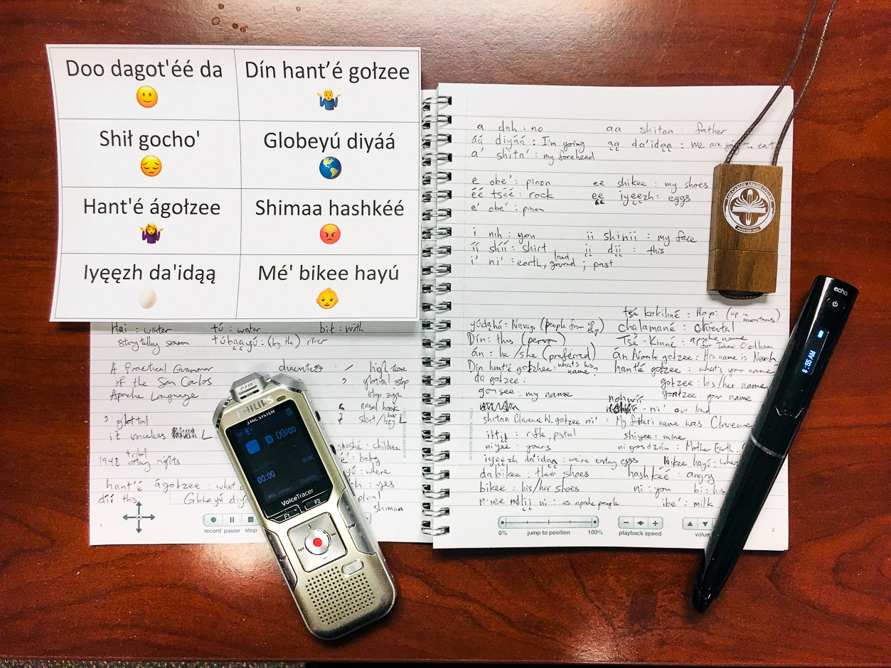
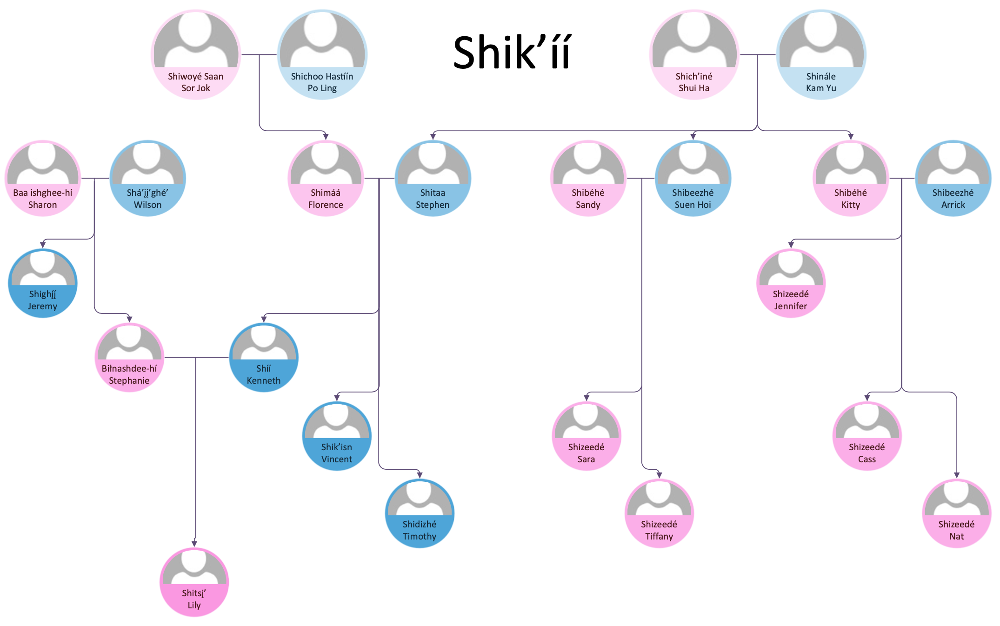

Taking a Class in Apache Language (Nṉee Biyáti’)
Taking a Class in Apache Language (Nṉee Biyáti’)
Dagot'éé! (Hello! How's it going?)
Here at San Carlos Apache College, we recognize and celebrate the unique opportunities that we offer to our students here at this Tribal College. Among these are the Apache language, history, and art classes that we are quite certain are not offered in any other institute of higher learning in the world! One of the initiatives that the College kickstarted in Spring 2019 was the encouragement and support of ALL staff to take one of these unique classes, as a way to more deeply connect with our local community and culture. It was an honor for me to be among the first to take Apache Language 101 as an employee!
Getting Ready for Class
Armed with a notebook, voice recorder, video camera, and one of the few Apache-English dictionaries in existence, I took my task as a language learner seriously. I stayed up many long nights reviewing my recordings and immersing myself in the language.
Learning about Family
It is impossible to learn the Apache language without also learning about Apache culture. For example, I got to study the many kinship terms that are essential in Apache culture. I also learned about traditional Apache foods, animals, and songs.
Teaching Apache to My Daughter
By the end of the semester, I wrote and illustrated a children's book using what I had learned in my Apache language class. I dedicated this labor of love to her and I was thrilled to see that she enjoyed it. In this video, I'm reading a draft of it to my 2-year-old daughter for the first time, and you can actually see us switch between English, Cantonese, Apache, and American Sign Language as we discuss the story!
Continuing the Journey
I had no background in any Native American languages prior to this experience, so this class provided many difficult challenges. I did what I could to fully engage in the course, and reaped many rewards through this venture. To this day, I continue to learn new things in the Apache language, and it allows me to more richly connect with the people of the San Carlos Apache Tribe. Among the Tribe, I have been blessed with many friends, who have helped me along the way. Ahíyi’e! (Thank you!)